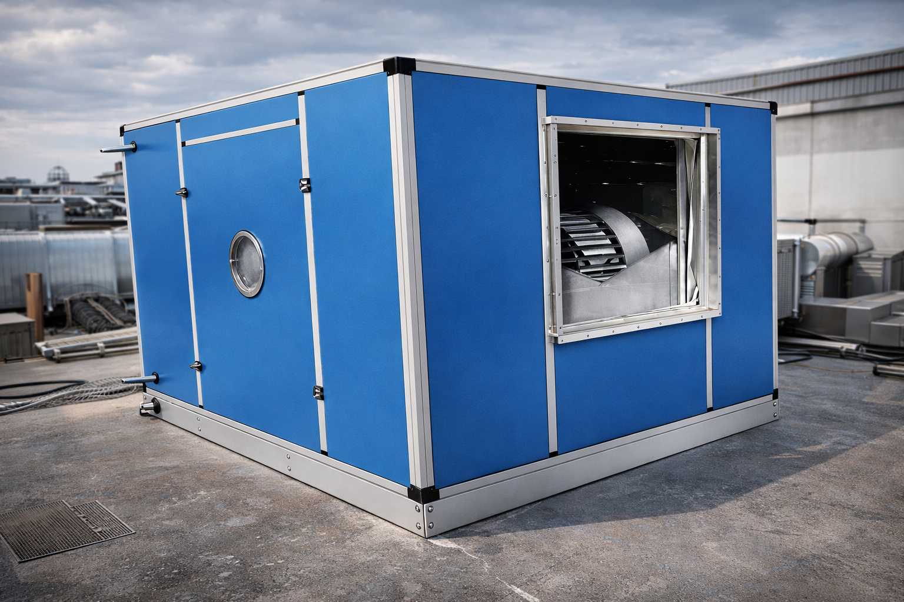

Industrial HVAC Systems for Factories in Uttar Pradesh | AHU & Ventilation Experts
When it comes to manufacturing facilities in Uttar Pradesh, the climate challenges are unique. From the intense heat of Moradabad summers to the humidity of the monsoon, choosing the right industrial HVAC system is critical for both machine performance and worker productivity. As a leading Industrial HVAC Contractor in Moradabad, our team recently installed a comprehensive 200 TR HVAC system for a large-scale brass manufacturing facility, proving that precision engineering is the key to industrial success in UP.

Why Factory HVAC Requirements are Different
Unlike commercial offices, factories generate significant internal heat loads from machinery and industrial processes. With over 8 years of experience, Aaron Air Care Engineering understands that industrial HVAC systems must be engineered for heavy-duty 24/7 operation, especially in the high-ambient conditions of North India.
Key Systems for UP Industrial Units
1. Air Handling Units (AHU): As a specialized AHU Manufacturer in Uttar Pradesh, we recommend modular double-skin AHUs for large production halls. These units provide superior air filtration and can handle the large air volumes required for dust-heavy environments like textile or woodworking units.
2. VRF/VRV Systems: For pharmaceutical plants and precision manufacturing where zone-wise temperature control is needed, Variable Refrigerant Flow (VRF) systems offer unmatched energy efficiency. We have successfully integrated these systems in numerous facilities across the North Indian industrial belt.
The Role of Industrial Ventilation
In many factories, cooling alone isn't enough. Proper Industrial Ventilation System Installation is required to remove fumes, stale air, and heat. Our team recently completed a turnkey ventilation project for a chemical processing plant, utilizing high-capacity centrifugal exhaust fans to maintain safe worker conditions.
Need an Expert Consultation?
Discuss your factory project with the top HVAC Engineering experts in Moradabad.
Get a Project QuoteDust Collection: A Safety Priority
For industries dealing with wood, metal, or chemicals, air purity is a legal requirement. Our team of Dust Collection System Experts designs pulse-jet filtration systems that capture 99.9% of airborne particles, ensuring your facility remains compliant with environmental regulations in Uttar Pradesh.
Frequently Asked Questions
What is the best industrial HVAC system for large factories in UP?
For large-scale factories in Uttar Pradesh, a combination of modular double-skin Air Handling Units (AHU) and high-efficiency VRF systems is generally considered the best solution due to their ability to handle high heat loads and maintain air purity.
How often should industrial HVAC systems be maintained?
In industrial environments like Moradabad, we recommend a quarterly preventive maintenance schedule to ensure filters are clean, fans are balanced, and the system operates at peak efficiency.
Does Aaron Air Care provide turnkey HVAC project execution in UP?
Yes, Aaron Air Care Engineering provides complete turnkey HVAC project execution across Uttar Pradesh, from initial load calculation and design to manufacturing and final on-site commissioning.
Conclusion: Investing in a robust HVAC system isn't just a luxury; it's a strategic industrial asset. Whether you need a new installation or a system upgrade, choose a partner who understands the local industrial landscape of Moradabad and the wider North India region.
Related Reading: Our Full Range of HVAC Services | Back to Home